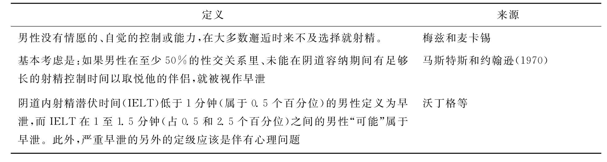
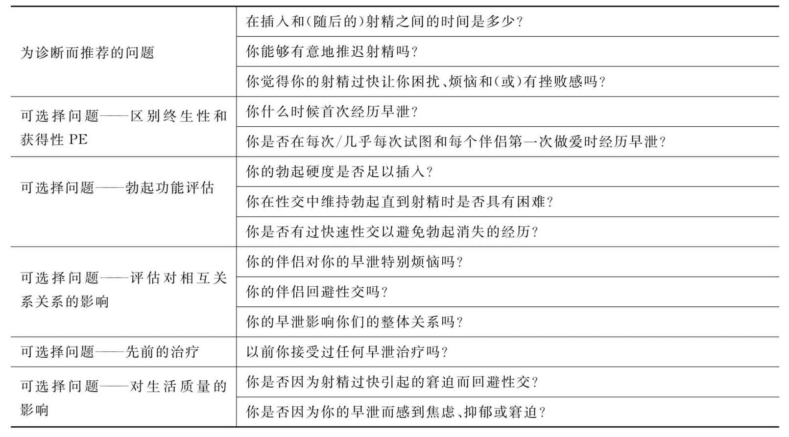
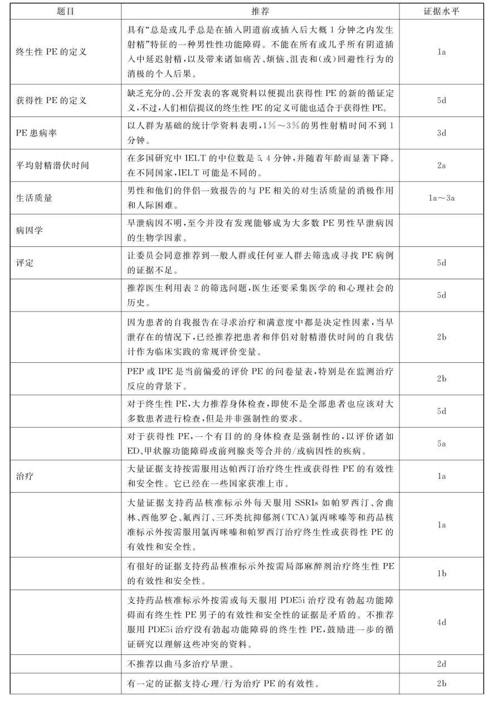
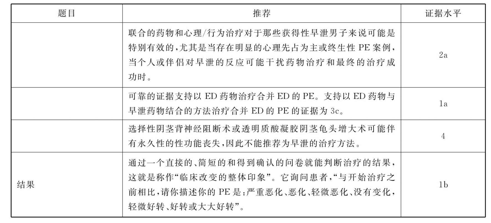

表1 早泄的定义

请根据您过去6个月的性生活实际情况回答下列问题，选择适当的编号标记（√）
1.您平时产生性欲望或性兴趣的频度如何？
A.几乎没有 B.少数几次 C.约一半左右
D.多数时候 E.几乎总是
2.性生活时阴茎勃起硬度足以插入阴道的频度如何？
A.几乎没有 B.少数几次 C.约一半左右
D.多数时候 E.几乎总是
3.性生活时，能够维持阴茎勃起直到完成性生活的频度如何？
A.几乎没有 B.少数几次 C.约一半左右
D.多数时候 E.几乎总是
4.性生活时，从阴茎插入阴道直到射精的时间有多久？
A.极短（＜30s） B.很短（1分钟） C.短（2分钟）
D.比较短（3分钟） E.不短（＞3分钟） F.4～5分钟
G.6～10分钟 H.11～20分钟 I.21～30分钟
J.＞45分钟
5.性生活时，您试图延长性交时间的困难程度如何？
A.很困难 B.困难 C.有些困难
D.一般 E.没有困难
6.总体而言，您对性生活的满意程度如何？
A.很不满意 B.不满意 C.一般
D.满意 E.非常满意
7.总体而言，您的配偶对性生活的满意程度如何？
A.很不满意 B.不满意 C.一般
D.满意 E.非常满意
8.性生活时，您的配偶达到性高潮的频度如何？
A.几乎没有 B.少数几次 C.约一半左右
D.多数时候 E.几乎总是
9.您对圆满地完成性生活的自信程度如何？
A.很低 B.低 C.一般
D.自信 E.很自信
10.性生活时，有多少次感到焦虑、紧张或不安感？
A.几乎总是 B.多数时候 C.一般
D.少数几次 E.几乎没有
Tara Symonds，Michael.A.Perelman，Stanley Althof等认为大多数PE的诊断都是依赖射精潜伏期（IELT），但单纯的时间维度（因素）不能囊括所有PE诊断应该包含的多个维度（因素），所以，他们力图开发一个简便的、多维度的、心理测量有效的PE诊断工具。研究人员将研究对象分为三组，一组研究对象的IELT小于或等于2分钟（人数是292人），按照DSM-Ⅳ-TR的临床诊断，临床医生确诊他们为PE患者；第二组是自我报告是PE的人（309）；第三组是自我报告没有PE的人（701）。按照标准的心理测量分析结果，用5个项目囊括了DSM-Ⅳ-TR的核心内容，即射精控制力（control）；频度（frequency）；较小的刺激（minimal stimulation）；痛苦（distress）；人际关系困难（interpersonal difficulty）。临床诊断最终开发出PE的诊断问卷。
该PE评估问卷的优点是简便和实用。完全可以用于任何PE研究或治疗的筛查工具。由于是在参考了DSM-Ⅳ-TR诊断标准之后编写和修订的版本，所以可以广泛应用，而且也完全可以和即将问世的DSM-Ⅴ接轨，或者作为先期研究的资料。
PE评估问卷
这是一个帮助男性确认在性生活中有无射精过快问题的问卷。即使你没有这方面的困扰，也请你完成问卷。请注意以下填写问卷的要求：
1.请将每个问题下最能代表你现状的答案涂黑；
2.每个问题你只能涂黑一个答案；
3.请注意这里的问题没有正确或错误的区别；
4.如果你在不同的时候对这些感受有所不同，那么我们这里需要的是你总体上的主要感受。
射精的定义：这里指的射精是当你的阴茎已经进入你性伴侣阴道之后的精液射出。
问题：
1.延长射精时间对你来说困难吗？
How difficult is it for you to delay ejaculation？
答案：根本不困难 有些困难 中等困难 很困难 极度困难
（0） （1） （2） （3） （4）
2.你射精的时间早于你自己的意愿吗？
Do you ejaculate before you want to？
答案：没有或几乎没有 少于一半时间 大约一半时间 多于一半时间 总是或几乎总是
（0） （1） （2） （3） （4）
3.在很小的刺激下你就能射精吗？
Do you ejaculate with very little stimulation？
答案：没有或几乎没有 少于一半时间 大约一半时间 多于一半时间 总是或几乎总是
（0） （1） （2） （3） （4）
4.因为射精时间早于你的愿望，你会有挫败感吗？
Do you feel frustrated because of ejaculation before you want to？
答案：根本没有 有点 中等 严重 极度严重
（0） （1） （2） （3） （4）
5.你过早的射精时间让你的性伴侣感到意犹未尽，你感到担忧吗？
How concerned are you that your time to ejaculation leaves your partner sexually unfulfilled？
答案：根本没有 有点 中等 严重 极度严重
（0） （1） （2） （3） （4）
评分方法：总共有5个问题，每个问题得分是从0分到4分，所有问题回答后分数最少是0分，最多是20分。按照信度和效度分析和研究的结果，小于或等于8分可以排除PE，9或10分可能是PE，等于或大于11分可以诊断PE。
1.服药后出现性功能障碍吗？（是 否）
2.是否由患者主动提出？（是 否）
3.性欲是否减退？（0＝没有 1＝轻度 2＝严重）
4.射精或性高潮是否延迟？（0＝没有 1＝偶尔有 2＝中度 3＝严重）
5.性高潮是否缺失？（0＝没有 1＝偶尔有 2＝经常有 3＝一直有）
6.是否有阴茎勃起困难？（0＝没有 1＝偶尔有 2＝经常有 3＝一直有）
7.服药之前的性功能状况：（正常 不正常）
8.随着服药时间的延长，性功能障碍是否自然缓解？（0＝完全 1＝中度 2＝没有缓解）
9.患者本人对性功能障碍的忍耐性：（0＝好 1＝很好 2＝不好）
10.最近药物剂量是否有减少？（是 否） 新的剂量：（ ）mg/d
11.减药后性功能障碍是否缓解？
（0＝完全缓解 1＝明显缓解 2＝有所缓解 3＝略有缓解 4＝没有缓解）
12.是否改换药物？（是 否） 新药名称：（ ） 剂量：（ ）mg/d
13.换药后性功能障碍缓解程度如何？（0＝完全 1＝明显 2＝有所 3＝略有 4＝没有）
14.换药后多长时间性功能障碍得到缓解：（ 天）
15.是否因性生活而短暂停药？（是 否） 停药间隔时间为（ ）小时
16.停药后性功能障碍缓解程度如何？（0＝完全 1＝明显 2＝有所 3＝略有 4＝没有）
17.是否因服药使原来的性功能障碍好转，如早泄等？（是 否）
18.患者配偶是否发现在服药后患者的性功能有障碍？（是 否）
19.患者配偶是否要求患者治疗性功能有障碍？（是 否）
20.患者认为与性功能有障碍有关的问题请详述。
1.张滨主编.性医学.广东教育出版社.2008
2.世界卫生组织.ICD-10精神与行为障碍分类.范肖冬，汪向东，于欣，刘平，译.人民卫生出版社，1993
3.刘继红，熊承良.性功能障碍学.北京：中国医药科技出版社，2004
4.陶林，王春华.PE的诊断和分型.中国男科学杂志，2002，2：142-143
5.Balon R.Antidepressants in the Treatment of Premature Ejaculation.Journal of Sex ＆Marital Therapy，1996，22（2）：85
6.郭应禄.阴茎勃起功能障碍.北京：北京医科大学出版社，1999：122
7.马晓年.现代性医学.第2版.北京：人民军医出版社，2004
8.LoPiccolo J PH.D.Premature Ejaculation and Male Orgasmic Disorder.1994—1997，American Psychiatric Press，Inc
9.merican Psychiatric Association.Diagnostic Criteria from DSM-ⅤI.1994：P236-237
10.Edward O.Laumann，John H.Gagnon，Robert T.Michael，and Stuart Michaels.The social organization of Sexuality.Chicago：The University of Chicago Press，1994：368-375
11.American Psychiatric Association.The Diagnostic and Statistical Manual（4th ）.Washington，DC：Author，1994
12.Diagnostic and statistical manual of mental disorders，fourth edition，text revision：DSM-Ⅳ-TR.Washington（DC）：American Psychiatric Association，2000：554
13.Tara Symonds，Michael A.Perelman，Stanley Althof et al.Development and Validation of a Premature Ejaculation Diagnostic Tool.European Association of Urology，52（2007）：565-573
14.Metz M，Pryor J，Nesvacil L，et al.Premature Ejaculation：A Psychophysiological Review.J of Sex ＆Marital Therapy，1997，23（1）：3
15.Waldinger M，Hengeveld M，Zwinderman A，et al.Effect of SSRI Antidepressants on Ejaculation：A Double-Blind，Randomized，Placebo-Controlled Study With Fluoxetion，Fluvoxamine，Paroxetine，and Sertraline.Journal of Clinical Psychopharmacology，1998，18（4）：274
16.Diagnostic Criteria from DSM—Ⅳ.Whshington，DC：American Psychiatric Assosiation，1994
17.Waldinger M，Hengeveld M，Zwinderman A，et al.Paroxetine Treatment of Premature Ejaculation：A Double-Blind，Randomized，Placebo-Controlled Study.Am J of Psychiatry，1994，151：1377
（陶林 刘捷 王春华）
简介：在过去的20多年里，关于早泄（PE）的知识已经取得显著进步，尤其是对于早泄的生理学理解、基于人群统计学对PE真实患病率的澄清、重新确定这一障碍的定义和诊断标准、评估社会心理对患者和伴侣的影响、构想有效的诊断和治疗结果评估、提出新的药物策略和有效性的检测、这些新建疗法的安全性与满意度等，都取得了有目共睹的实质性进展。考虑到这些大量的高水平研究，和我们已经确认的早泄（PE）诊断和治疗的3套临床实用指南《美国泌尿学科学会2004年PE药物治疗指南》、《欧洲泌尿外科学会关于男性性功能障碍指南：勃起功能障碍和早泄》以及修正于2009年的《泛阿拉伯性医学学会实用指南（射精异常）》没有足够的广泛性，并未能详细阐述心理干预和药物干预，而且非常重要的新证据并未能纳入这些指南。现在正是国际性医学学会（ISSM）颁布一套当代的、措辞严谨的、循证的、综合的和实用的PE诊断和治疗临床指南的适当时机，其针对的首要目标是一线临床医生，其次才是性医学专家。
指南建立进程（摘要）
2009年9月，ISSM的PE指南委员会在伦敦召开为期3天的会议。26个委员会成员采取同辈推荐和进一步审查筛选的方式，以提供学科的多样化、不同观点、学识、性别（22位男性和4位女性）和地域的平衡。所有成员都必须事先申报他们参与委员会工作的任何潜在的利益冲突。委员会按照“循证医学牛津中心”制定的质量、任何提议的效力划分等级。表3包含了相关委员会循证提议的摘要。会议由达帕西汀制造厂商强生公司提供无限制津贴支持。在指南和相关资源开发期间，ISSM要求（会议）从企业中完全独立出来。会议中没有企业代表，没有企业试图在（指南）建立和书写过程的任何部分或任何时间施加影响。
PE定义
现存的几个PE定义已经由各类专业组织和（或）个人整理（见表1），大多数包括终生的（原发性）和获得的（继发性，指PE症状之前有过射精功能正常的阶段）子类型。对其的主要批评和不满包括：并非循证、缺乏专业操作标准、过分含糊以及依赖诊断专家的主观判断。其共同点是：（i）射精潜伏期短；（ii）知觉的自我能力或对射精时机控制的缺乏；（iii）痛苦和人际困难（涉及射精功能障碍的）。
ISSM在2007年召开专家会议仔细回顾了循证资料，委员会在明确的科学标准基础上提出终生性PE的定义是：具有“总是或几乎总是在插入阴道前或插入后大约1分钟之内发生射精”特征的一种男性性功能障碍。不能在所有或几乎所有阴道插入中延迟射精，以及带来诸如痛苦、烦恼、沮丧和（或）回避性行为的消极的个人后果（发表于2008）（LOE 1a）。
这个定义仅适用于插入（阴道）的性活动，它没有对其他的或男-男的性行为给以PE的定义。目前尚无适用于其他一些群体的充足的临床资料，也没有足够的已经发表的客观数据为获得性PE提出新的循证定义，终生性PE的标准也许同样适用于获得性PE。（LOE 5d）
表1 早泄的定义
续表
把男性早于阴道插入的射精称作产前射精，是PE类型中最为严重的。典型的情况是这些男人/情侣出现在不育不孕门诊。据估计，5%的终生PE男性属于产前PE。
针对许多不够早泄诊断标准、但对自己射精功能感到痛苦而请求帮助的男性，提出了自然变异型PE和早泄样射精功能障碍这两个亚型。自然变异型PE指不规律的过早射精，往往是主观上感觉射精控制能力减弱。这个亚型不属于性功能障碍或心理病理，只是性表现的正常变化。早泄样射精功能障碍指：（i）主观认为性交射精一贯过快；（ii）对射精过快或缺乏控制持先占为主的想象；（iii）实际的IELT在正常范围内或时间更长（超过5分钟才射精）；（iv）在即将射精之际控制射精的能力也许降低或缺乏；（v）并不能由其他心理异常来解释。（LOE 5d）
患病率
由于PE定义的变化、患病率数据搜集方式（基于人群、自我报告或基于临床）的不同，尚缺乏一般男性终生或获得的PE患病率的可靠资，而且还受不同地理、文化环境、宗教信仰、种族和社会地位、政治影响力等背景的影响。患者自我报告的患病率明显高于根据ISSMPE定义的临床评估。根据“环球性态度和性行为研究”（GSSAB）对27，500名40～80岁的男女关于态度、行为、信念和性满意的国际调查数据显示，跨越各年龄组的全球PE患病率约为30%（接近患者的自我报告）。而按ISSMPE定义的时间参数（IELT约为1分钟），在以人群为基础的500名男子中用秒表测量其IELT时间，仅有1%～3%符合诊断条件，但没有评估他们是否痛苦。这样低的患病率更接近于参加PE治疗的人数。对于那些可能不符合ISSM诊断标准的男子，也应予以谨慎评估并考虑适当的治疗。（LOE 3b）
临床实践中PE的患病率
临床中的PE常来自患者主诉，诊断更依靠其痛苦程度，症状多反复无常，所以临床实践很难评估其真正患病率。只有9%左右的患者求治，其中81.9%是患者主动求治，91.5%的报告疗效极差或没有改善。26%的患者要求处方SSRI药物，22%每天服用SSRIs和11%使用局部麻醉剂。
平均射精潜伏时间
近期的跨国（荷兰、英语、西班牙和土耳其）IELT调查报告表明：其中位数是5.4分钟（介于0.55—44.1分钟），随年龄增加而显著降低，从18～30岁年龄组的6.5分钟到51岁以上组的4.3分钟。中位数在不同国家之间也不同，一般与避孕套和包皮手术无关。几年后进行的相似研究结果与此吻合，IELT中位数为6分钟（为0.1-15.2分钟）。（LOE 2a）
病因学
先前认为PE主要是心理和人际因素所致，近年研究表明PE也许是躯体异常或神经生理紊乱所致。这些生物学因素如龟头高度敏感、阴部神经在大脑皮层的定位、中枢5羟色胺能神经递质紊乱、勃起困难、前列腺炎、处方药物的解毒作用（如抗抑郁药瑞波西汀、西酞普兰或滋补药）、慢性盆腔疼痛综合征、精索静脉曲张和甲状腺功能异常等。但没有哪个因素得到综合性和大范围研究的支持。
近期研究提示一些神经生物和遗传变异因素可能是符合ISSM定义的终生性PE的病理生理原因，而心理/环境因素可能维持或强化这种状态。终生性PE可以用5-羟色胺浓度低、5-羟色胺2C受体敏感度低和（或）5-羟色胺1A受体过度敏感来解释，推测也许与遗传因素有关，因此在最小刺激下快速射精，但这些只能作为2%～5%的PE的假设病因。
PE的遗传学
有些男性的IELT和终生性PE都是由遗传因素决定的，PE患者的一些直系家庭成员也患有PE。对芬兰男性双胞胎进行的调查表明，遗传影响可能使一些早泄男性产生特异质和易染病体质，而不支持所有终生性PE男性都具有潜在遗传影响的结论。（LOE 2a）
甲状腺激素
射精反射的激素控制尚未完全澄清。证据表明抑郁、5羟色胺和甲状腺激素之间存在一定关联，50%的甲亢男性患PE，而甲亢成功治愈后PE降低到15%。
前列腺炎
考虑到前列腺在射精机制中的角色和26%到77%的慢性前列腺炎或慢性盆腔疼痛综合征的男子报告有PE，因此推论局部感染的直接影响可能是有些获得性PE的病因。在慢性前列腺炎、ED和PE之间的准确病理生理学联系尚不清楚。（LOE 3a）
心理因素
存在一系列促成和维持PE的心理因素，可以划分为易患或历史因素（如性虐待、家庭内性态度）、个人心理因素（如体像感，抑郁、操作焦虑、情感表达障碍）或相互关系因素（如亲昵、愤怒）。有关这些变量与PE之间相关关系的研究是非常有限的，存在横断面性质，只能确认各变量之间的联系，而不是病因学的相关关系。要慎重解释这些相关关系，每种心理因素都可能导致PE，反之亦然，很可能存在事件的交互关系和影响，如操作焦虑导致PE，PE进一步恶化了操作焦虑。（LOE 5d）
PE对男性和伴侣生活质量的影响
回顾从1997年到2007年使用不同方法和结果测量的有关PE对男性、其伴侣及其相互关系，对心理和生活质量的影响的定性和定量研究报告。一致认为PE男性及其女伴存在与早泄相关的消极影响、相互关系困难、抑郁和生活质量的整体下降。PE男性容易自卑和缺乏自信，报告称1/3的PE男性存在与性情境相关的焦虑。PE对单身男子的消极影响更大，而且成为阻碍寻找新关系的障碍。PE对女性的性体验具有直接的消极影响。（LOE 1a-3a）
临床医生应该特意筛选PE吗
筛选涉及对无症状人群的测试，以发现处于疾病早期阶段的案例。受PE影响的男性不是没有症状。委员会同意，无论对一般人群还是最可能的亚人群，没有足够证据对PE的筛选提出建议。建议对ED男性要筛选一下有无PE。（LOE 5d）
需要提高公众有关性健康问题的意识，包括PE，这样的话，受性忧虑影响的个体才能意识到对他们开放的选择和干预介入。临床医生应该扮演性健康教育的重要角色，并且PE也应该包含在性健康教育的项目中。
PE的评估
历史
如果在医务人员诊室谈论性主诉，患者常会尴尬、害羞、吞吞吐吐。患者期待临床医生主动询问他们的性健康，这就允许患者自由地讨论他们的性忧虑，并有助于筛选相关的健康风险（如心血管风险和ED）。
表2列举了推荐的和可选择的应该询问主诉PE患者的问题，以便确立诊断和实施恰当治疗的细节。（LOE 5d）
图1是由罗兰德等设计的流程表，为主诉PE的患者详细设计了评估和治疗的选择办法。
射精潜伏时间的评估
射精潜伏时间（IELT）的秒表评估
在PE的临床试验和观察研究中，广泛利用秒表测量IELT，但没有推荐到常规临床使用。秒表测量也存在干扰性愉悦或破坏自然性的缺点。患者和伴侣自我报告的IELT与秒表测量具有很好的相关性，可以替代秒表测量。自我报告是寻求治疗和满意的决定因素，建议把患者和伴侣对IELT的自我评估作为临床决定IELT的方法。（LOE 2b）
身体检查
对于终生性PE，尽可能实行身体检查但并非强制性的，有些患者觉得检查具有安慰作用。对于获得性PE，必须进行定向的身体检查，以评估与ED、甲状腺机能失调和前列腺炎等相关联/或有因果关系的疾病。（LOE 5d）
表2 为建立早泄诊断和恰当治疗推荐和可选择的问题
仪器的评估
秒表评估
PE的标准评估测量包括使用经过验证的问卷和患者报告的结果（PRO），再加上IELT的秒表测量。这些新的测量主要作为研究工具而建立。一些量表已经显示出良好的心理测量性能，对于临床筛查和评估具有潜在的辅助价值。相反，IELT的秒表测量虽然广泛运用于临床测试和观察研究，但是一般不建议运用在临床实践中。
至今已经建立和发表了5个可用的问卷。目前，已有两个经过广泛心理测量学的测试和确认，是当前评估PE的首选问卷量表，特别是能够满足大多数开发和治疗反应监测的标准：早泄量表（The Premature Ejaculation Pro le，PEP）和早泄指数量表（Index of Premature Ejaculation，IPE），它们已具有海量的数据库。第三个简短诊断量表也已建立并有效运用于临床。所有上述三个测量都可在附录1.中找到。一个量表（PEDT）具有中等规模的数据库，另外两个量表（阿拉伯，中国PE问卷）只得到最低限度的效度或临床验证数据。不推荐后面这些量表使用于临床。总之，这些量表可以当做有用的辅助，但不应代替有资历的临床医生所采集的详细性历史。（LOE 2b）
治疗
药物治疗
以下概括了所有推荐的治疗早泄的药物，不包含仍在临床试验中的化合物。使用局部麻醉以减少龟头敏感度可能是PE治疗的最熟知的模式。选择性5羟色胺再摄取抑制剂（SSRIs）、帕罗西丁、舍曲林、氟西汀、西他罗仑和三环类抗抑郁剂（TCA）氯丙咪嗪等的引入，给PE治疗带来了革命性的变化。这些药物通过5-羟色胺转运者阻止了轴突由中枢5羟色胺能神经元的突触间隙再摄取5羟色胺，结果导致5-羟色胺能神经传递的增强并刺激突触后膜的5-羟色胺自身受体。
选择性5羟色胺再摄取抑制剂和三环类抗抑郁剂治疗
早泄治疗可以使用按需服用SSRIs如达帕西汀，或药品核准标示外使用（或“非常规性使用”，offlabel）的氯丙咪嗪、帕罗西丁、舍曲林、氟西汀和西他罗仑。
达帕西汀（Dapoxetine）
达帕西汀已经在奥地利、德国、意大利、芬兰、墨西哥、新西兰、葡萄牙、韩国、西班牙和瑞典等地获准用于早泄的治疗。它是一个起效迅速、半衰期短的SSRI药物，其药代动力学特点提示可以作为按需服用的PE治疗药物。没有达帕西汀与其他药物相互作用的报告，包括磷酸二酯酶抑制剂。在RCTs中，从第一次给药开始，在性交前1～2小时服用30或60mg的达帕西汀明显比安慰剂有效，IELT增加2.5至3.0倍，射精控制增强，降低郁闷并增强愉悦感。对于终生性或获得性PE都非常有效。副作用是罕见的，具有剂量依赖性，包括恶心、腹泻、头痛和头晕。4%（30mg）和10%（60mg）的受试者因此而退出临床试验。没有自杀观念或自杀企图上升的迹象，突然停用达帕西汀基本上也没有撤退症状。
有1a的证据支持按需服用达帕西汀治疗终生性或获得性PE的有效性与安全性。（LOE 1a）
药品核准标示外使用的SSRIs和TCAs
每日服用帕罗西汀10～40mg、氯丙咪嗪12.5～50mg、舍曲林50～200mg、氟西汀20～40mg、西他罗仑20～40mg常常能有效延迟射精。发表的数据元分析建议，帕罗西汀延迟射精的作用最强，基线水平比IELT提高约8.8倍。
射精延迟常在开始治疗5～10天内发生，但也许2～3周后才能充分起效，要求长时期坚持服用。不良反应通常很轻微，开始出现在治疗的第1周，可能在2～3周内逐渐消失。它们包括疲劳、困倦、轻微恶心、腹泻或出汗。很少有性欲低下和ED的报告，在无抑郁的PE男子中发生率较低，而在服用SSRIs治疗抑郁的男子中发生率更高。神经认知模式的不良反应包括少量患者的明显焦躁不安和轻度躁狂。有双向抑郁病史的男子应避免采用SSRIs治疗。
对抑郁症和（或）焦虑症患者的RCTs全面分析表明，在年轻人中，自杀观念或自杀企图的风险会有所增加。相反，在无抑郁症的PE男子的SSRIs临床试验中并未发现自杀观念的风险。对18岁或以下的PE青少年，以及合并抑郁症的PE男子，尤其是具有自杀观念的男子，仍然建议慎开SSRIs处方。应建议患者避免突然中断或迅速减少每日服用的SSRIs用量，否则也许会伴发SSRI撤退综合征。
按需服用氯丙咪嗪、帕罗西汀、舍曲林和氟西汀应该在性交前3～6小时服用，中度有效及容易耐受，但其射精延迟作用明显不如每日服药的治疗效果。按需治疗既可以配合每日用药的最初试验，也可以配合低剂量的每日用药。SSRIs或TCAs治疗PE的最大局限性是停药所导致的复发。再者，患者不愿意服用SSRIs来开始PE的药品核准标示外的治疗。据报告，30%的患者拒绝开始治疗（帕罗西汀每天10mg共21天，接着按需服用20mg），而另外有30%开始治疗的患者中止了治疗。其原因包括：不想服用抗抑郁药；治疗效果低于预期；因为关系问题，短时间失去性兴趣；以及一些不良反应。
具有1a水平的证据支持SSRIs药品核准标示外每日服用帕罗西汀、舍曲林、西他罗仑、氟西汀和5羟色胺能三环类氯丙咪嗪和按需服用氯丙咪嗪、帕罗西汀、舍曲林治疗终生性或获得性PE的有效性和安全性。（LOE 1a）
采用达帕西汀（如果有药可用的话）按需给药或每日服用药品核准标示外SSRIs治疗PE的方案，应基于医生对各个患者具体需求的评估。性交机会很少的PE男子，可能更喜欢按需服药，而已经建立稳定性关系的男子可能更喜欢每日用药。
在一些国家，因为监管机构对未注册/批准的药品核准标示外适应证治疗的强烈反对，医生开处方会存在困难，那么早泄治疗将是复杂和困难的。
局部麻醉剂
局部麻醉剂的使用已经得到很好发展，如乳状、凝胶或喷雾状的利多卡因和（或）丙胺卡因，对延迟射精具有中等效力。PSD502是正在临床试验中的利多卡因和（或）丙胺卡因喷雾剂。试验结果表明治疗组的IELT提高了6.3倍，并伴有与控制和性满足相关的PRO测量的改善。因为化合物的独特配方，只有极少报告说阴茎感觉减退会转移给伴侣。其他局部麻醉剂伴有显著的阴茎感觉缺失和可能的经阴道吸收，除非带上避孕套，否则将导致阴道麻木和女性性高潮缺失。
有1b证据支持在药品核准标示外使用局部麻醉剂治疗终生性PE的有效性和安全性。（LOE 1b）
磷酸二酯酶5型抑制剂（PDE5i）
对服用PDE5i治疗PE的14项研究进行综述，不过未能提供充分证据支持单独或配合SSRIs使用PDE5i在治疗PE中的作用，除非PE男子合并有ED。近期设计的合理研究确实支持那些药物的潜在作用，需要和鼓励更进一步循证研究的证据。
只有4d水平的证据支持在药品核准标示外使用按需或每日口服PDE5i治疗勃起功能正常的终生性PE的有效性和安全性。不推荐使用PDE5i治疗勃起功能正常的终生性PE。
其他药物治疗
文献已经报告过按需服用中枢止痛药物曲马多，或海绵体内血管活性药物注射的方法。按需服用曲马多25mg可以把IELT从基线的1.17分钟提高到7.37分钟。另一研究表明，按需服用曲马多50mg，能在治疗结束时使IELT从19秒的基线值提高到243秒。曲马多组报告的与治疗相关的不良反应为28%，而安慰剂组为15%，包括恶心、呕吐和头晕。
有2d证据支持这些治疗的有效性和安全性的，但并不推荐使用它们治疗PE。
手术
有些作者报告在行为和（或）药物治疗难以治愈的终生性PE治疗中，有选择性地进行阴茎背神经阻断术、透明质酸凝胶阴茎龟头增大术引致阴茎感觉减退。直到有进一步的研究报告后，才能清楚外科手术对PE处理的作用。
只有4级水平的证据，也就是说目前没有证据提示选择性阴茎背神经阻断术或透明质酸凝胶阴茎龟头增大术是治疗PE的有效方法。外科手术也许与性功能永久丧失有关，当前并不推荐用于PE的处理。
心理/行为，综合的医学、心理和教育的干预
目前已建立起广泛针对PE的心理干预方法。大多数对心理治疗结果的研究是没有对照、非双盲的试验，没有一个符合高水平的循证研究要求。文献报告中参与人群数量很少或规模不够大，他们接受不同形式的心理干预，只有有限的随访或没有随访。在大多数研究中，积极的治疗组未与安慰组、对照组或候诊小组相比较。经常使用的行为治疗方法大多是挤捏技术和“停-动-停”技术。这两种治疗都是用于教育男性去识别中度程度的兴奋。男性通过一系列循序渐进的训练，掌握能够识别中度兴奋的技术：从自我刺激开始，变换为伴侣手法刺激，然后是不抽动的性交，最后采取“停-动-停”的抽动。这些循序渐进步骤的结果是增加了IELT、性自信心和自尊，不过只有极少数的对照研究支持这一主张。
较早的无对照组的挤捏技术研究报告说治疗结束时的失败率为2.2%，5年随访时为2.7%。其他研究结果发现成功率在60%～90%之间。近期一项研究证明，行为技术组的IELT比候诊对照组提高了8倍。
心理干预的设计目标不是单纯为提高IELT，而是要达到另外的结果。目标因素集中在男性、他的伴侣和他们的两性关系。其目标特别包括：①提高男性性表现的自信心，也要提高其整体自信心；②减轻操作焦虑；③加强与伴侣的沟通；④解决可能促成或维持PE的人际关系问题。
有关心理/行为干预治疗PE有效性的证据为2b水平。
应该对具有自然变异性PE的男性（伴有射精主观控制能力感觉减弱的，不规则的和反复发生的快速射精）进行教育并恢复其自信心。早泄样射精功能障碍（那些IELT在正常值范围，但先占为主认为射精控制有问题）的男性需要转诊接受心理治疗。同时需要更多的研究以更好地确定对这些暂时性PE亚型恢复信心、教育和心理疗法的有效性。
医疗保健机构和心理健康专业人员在治疗PE方面的兴趣和训练水平是不同的。一般来说，所有临床医生都应该能够作出诊断、提供支持并指导行为练习。当情况复杂和（或）患者对初级的干预缺乏反应时，医生应该考虑转诊给性健康专家处理。
伴侣的重要性
把伴侣包含在治疗过程中是极其重要的，但并非成功治疗的强制组成部分。有些患者不理解为什么医生希望其伴侣也参与进来，有些伴侣则不愿意加入到患者的治疗中。然而，如果伴侣不参与治疗，她们也许抵制改变她们性生活方式的性合作或配合。有一个愿意合作的伴侣，能增强男性的自信、技能、自尊和男子汉气概，以及更广泛协助男性建立射精控制能力。反过来，这样又能促使伴侣性关系的改善、乃至他们整体关系的广泛改善。虽然没有对伴侣是否参与PE治疗对治疗效果影响的对照研究，但一篇对ED治疗研究的综述证明，在成功治疗的案例中，性伴侣的配合包括人际因素都起到重要作用。
医学和心理综合治疗的益处
有3项研究报告了PE的药物和行为综合治疗，1项研究报告连续的药物治疗和随后的行为治疗。每项研究报告的药物是不同的，在所有3项研究中，无论是IELT和（或）中国早泄指数，综合治疗都优于单独的药物治疗。
对于ED，同样发现综合治疗既比单独的心理治疗有效，也比单独的药物治疗有效。单独药物治疗所不能涵盖的因素可以用心理方法处理，包括：①患者因素（操作焦虑、自信）；②伴侣因素（伴侣性功能障碍）；③人际因素（冲突、缺乏沟通）；④在两性关系中的性因素（性脚本、性满足）；⑤背景因素（生活紧张因素）。
对于有清楚的心理积淀的获得性PE，或者有个体或双方问题干扰医学治疗的终生性PE，综合的药物和心理方法也许特别有用。同样，对于PE合并ED的男性，综合治疗可能也有助于处理这些性功能障碍的心理社会因素。（LOE 2a）
教育和教练的角色
对于那些没有接受药物治疗的PE男性，对其进行PE的教育或许有助于改善PE。提供PE流行率及一般人群IELT的教育，也许能消除关于PE的神话。额外教育对于回避性活动的PE男性也有所帮助，他们因为害怕性兴奋而不愿和伴侣讨论PE，或限制他们的全部性活动。教育策略的目的是给予男性自信心，去尝试医疗干预、减少操作焦虑和调整他适应不良的性脚本。（LOE 5d）
终生性PE 因为终生性PE很可能具有器质性病因，首先推荐结合基本心理教育的医学介入。然而，如果PE已经导致心理或关系的问题，患者程度的评分、伴侣咨询、指导和（或）关系治疗也许是医学干预有用的辅助手段。（LOE 1a）
获得性PE 推荐HCPs采用可行的医学和心理结合的方法。男性渴望治疗得到立竿见影的效果，因此，对于ED这样的相关疾病因素的医学治疗及改善，会非常有用。
此外，对PE性质的教育，帮助男性通过行为练习提高射精控制能力，识别受约束的/狭隘的性行为模式，及化解人际关系的问题，也许会对获得性PE有显著帮助。一旦男子自信心和控制感得以改善，就有可能减少或中止医疗干预。（LOE 5d）
特殊患者群体
PE合并ED
近期数据证明，30%～50%的ED患者也经历过PE。男性患ED时可能要求更强烈的手法刺激以达到勃起，或尽快性交以避免勃起的消退，结果导致快速射精。而伴随存在的与ED相关的严重操作焦虑，只能使早泄程度进一步恶化。证据提示，单独的PDE5i或联合使用SSRI也许会对合并ED的获得性PE产生一定作用。PDE5i改善勃起功能和提高IELTs之间的高度相关性表明，改善勃起功能能够减轻PE的严重程度。尽管轻度的ED和PE男性确实得益于SSRIs的治疗，可是与没有ED的男性相比，他们的治疗反应肯定降低了。另外，具有终生性PE合并轻度ED的男性，对治疗的反应性肯定不如具有获得性PE合并轻度ED的男性。
用ED药物治疗合并ED的PE，得到1A水平的证据支持。用ED药物和PE药物组合的治疗合并ED的PE，得到3C水平的证据支持。鼓励进一步的循证研究。
PE和甲亢
许多甲低患者具有ED，只有极少数经历PE，而50%的甲亢男性有获得性PE。采用抗甲状腺药物、放射活性碘或甲状腺切除术等甲亢治疗，使35%的人射精功能正常化。委员会不推荐让获得性PE男子做常规的TSH筛选。
PE和慢性前列腺炎
慢性前列腺炎的抗生素治疗减轻了下尿道症状（LUTS），但几乎没有资料提示其能改善PE和其他性功能障碍症状。虽然对射精疼痛或LUTS男子进行了强制性的前列腺身体和微生物学检查，但没有足够的证据支持对PE男子进行慢性前列腺炎的常规筛查。
结果
这篇文章包含了ISSM的PE指南委员会的报告，肯定了ISSM关于PE的定义，并提出其患病率远远低于先前的估计。介绍了基于人群统计学的正常射精潜伏时间和关于PE的生物与心理病因的循证数据。描述和证实了简短的评估程序，回顾了有效的诊断和治疗问卷。最后，介绍了最实际的治疗提议指导那些熟悉或不熟悉PE的临床医生，以便能给他们的患者提供便利的治疗。纵观所有治疗，包括每天服药和按需服药治疗计划在内的患者的IELT，预期会比基线水平提高3到8倍。治疗也显著改善了患者可以知觉的对他们射精时间的控制能力（自我效能感）。来自患者的观点和可以知觉的射精控制能力是比单独的IELT更为重要的结果变量。
通过一个直观、简短和得到确认的问卷就能判断治疗的结果，这就是称作“临床改变的整体印象”（Clinical Global Impression of Change，CGIC）。它询问患者，“与开始治疗之前相比，请你描述你治疗后的PE是：严重恶化、恶化、轻微恶化、没有变化，轻微好转、好转或大大好转”。（LOE 1b）
在随机的、有安慰剂对照的、双盲的帕罗西汀的临床研究中，包括CGIC改善、IELT增加幅度、IELT增加与CGIC得分的关系等范畴都得到改善。另外，注意到在CGIC得分和射精控制与性满足之间的正相关，而CGIC得分与性抑郁之间呈负相关。对照化解了CGIC绝大部分的差异。
初级保健医生（PCP）的角色
初级保健提供者通常是健康保健系统接触患者的一线人员，包括性问题的诊断和治疗。这个角色包括：（i）对任何未确诊的体征、症状或健康忧虑（“未分化的患者”）的最初的识别和评估；（ii）包括疾病预防、健康管理、咨询、患者教育、慢性疾病处理和患者支持在内的健康促进；（iii）协调与患者保健促进的有效沟通，和鼓励患者成为健康的伙伴。这样的保健模式不局限于问题来源、器官系统或诊断。
基于几个原因，初级保健医生是为性困难患者提供帮助的理想群体，这些原因包括：（i）与患者讨论和解决性问题时的纵向的和个人之间关系的价值；（ii）一个全科医生可能对围绕性问题的多因素问题作出更恰当的评估；（iii）对于已确诊的性功能障碍患者非常适合于在初级保健做常规的长期随访。PCP的主要任务是识别PE，并使患者对获得帮助感到舒适。应该由具有与患者就性活动顺利畅沟通能力的，以及对一线治疗有广博学识的PCP来规划最初的引导和治疗。泌尿科医生有助于处理困难和复杂的形式。具有处理性问题经验的精神健康专业人员与临床医生协作，可以提高成功治疗的可能性：（i）解决性困难；（ii）梳理出重要病史；（iii）患者和伴侣的教育；（iv）建议增强性能力的技巧；（v）帮助伴侣解决个体问题，也解决相互关系问题。
对于在处理男子PE时遇到的不同时间段的不同变化，最好得到性健康专家的帮助。作出需要会诊决定的主要因素包括：（i）初级保健医生在讨论和处理治疗选择时的舒适问题；（ii）所涉及的心理社会和性问题的深度；（iii）最初干预努力的成功或失败。在特别情况下，更为特别的专业帮助常常是有用的，它包括：（i）治疗失败；（ii）解剖的或复杂的激素问题；（iii）围绕性和（或）伴侣关系的复杂问题；（iv）严重的心理问题；（v）在治疗医生需要帮助的任何时间。
表3 有关早泄的循证建议
续表
处理原则“ALLOW（容许）”是“PLISSIT”原则（允许、有限信息、特殊建议和强化治疗）的副产品，能够帮助PCPs就性健康问题与患者交谈，以及在适当时转诊患者。医生从“询问（Asking）”患者的性生活开始，并“合理（法）地（Legitimizes）”关注和处理性功能障碍，也许要把患者转诊给一位性健康专家以进行进一步的评价和处理。相反地，如果医生对处理患者的问题感到自信无忧，他/她接着会“开放地（Opens）：就性问题展开进一步的讨论”；并且医生和患者“一起工作（Work together）去建立处理计划”。这种方法允许患者在讨论其性问题时能随医生的具体情况而有所伸展。
当初级保健医生在临床工作中遇到棘手问题时，可以有两个选择：一是把患者送到性健康专家处寻求“咨询”。考虑到额外投入，进一步的处理仍打算由初级保健医生执行。第二个选项是“转诊”患者给另一位医生，通常是一位性健康专家去做进一步的处理。在这种情况下，患者应随身携带转诊理由的小结、充分的病史、相关的诊断研究。性健康专家接着将做进一步适当的处理，也保持初级保健医生考虑过的进展。在“转诊”的情况下，患者的保健直接转给性健康专家。初级保健医生通过告知性健康专家所涉及的特定请求的水平，可以增强彼此的沟通。
由缺乏经验的初级保健医生与适合的性健康专家一道合作处理，这是处理患者问题和提高初级保健医生对PE理解的极好方式。临床医生之间的良好沟通能够增进患者的治疗结果，并理解治疗计划和监督措施。如果初级保健医生与性健康专家之间就谁将做什么的问题上达成明确共识，即可优化共同处理的问题。通过达成使用一个具体转诊指南的“转诊协议”就得以确保这类沟通，每个医生的职责和活动就得以清晰阐述。
结论：
这些指南已由跨学科的PE领域公认的专家组成的国际专题组慎重颁布，目的是为诊断和治疗PE的家庭医生和性医学专家构建一个措词清晰、实用、循证的推荐。意识到不是所有的证据都有同等的效力，委员会根据循证医学牛津中心制订的排名，经过评审和辩论，推出了他们所推荐的不同级别。
上述表格列举了所有与PE指南委员会相关的提议。这些指南确认了PE的ISSM定义并提议，其患病率明显低于先前的想象。介绍了PE的有关生物和心理病因的循证资料，就像正常射精潜伏时间的以人群为基础的统计学数字。描述了简短的评估程序，评审了经过验证的诊断和治疗问卷。最后，介绍了指导医生的最实际的治疗提议，包括熟悉或不熟悉PE的临床医生，使他们能够便利地治疗他们的患者。
指南的制定是一个持续评审资料和吸收最新研究结果的循序渐进的过程。我们期待不间断的研究为这个性功能障碍提供更完整的病理生理学理解、也使得性功能障碍的治疗更有效更安全。因此，强烈建议ISSM每隔四年重新评价和更新这些指南。
最后，重要的是记住PE可以引起男性、他的伴侣和伴侣双方显著的个人和人际关系的痛苦。我们热切期待这些指南能够协助医生准确诊断和处理那些存在PE主诉的患者。
早泄指数（IPE）
这些问题是：在过去4周里，在你性生活中遇到的性问题对你的影响。请尽可能诚实和清晰地回答提问。在回答这些问题中，适用下列定义：
性交：是定义为阴道插入（你的性器官进入你伴侣的阴道）。
射精：精液自阴茎射出。
控制：当你准备好时才射精。
痛苦：意思是早泄如何让你沮丧、失望或烦恼。
每个问题只选择一个答案（标注其中一个方格）
1）在过去4周的性交中，你的射精时有多少时候是能够控制的？
□没有性交 □几乎总是或总是 □一半以上时间 □大概一半时间 □少于一半时间 □几乎从未或从未
2）在过去4周的性交中，当你射精时你有多自信？
□没有性交 □高度自信 □中高度的自信 □自信心不高不低 □中低度的不自信 □自信心低
3）在过去4周的性交中，当你射精时有多少时候是满意的？
□没有性交 □几乎总是或总是 □一半以上时间 □大概一半时间 □少于一半时间 □几乎从未或从未
4）在过去4周的性交中，当你射精时你对控制感有多满意？
□没有性交 □非常满意 □有些满意 □谈不上满意不满意 □有些不满意 □非常不满意
5）在过去4周的性交中，当你射精时对你的性交时间长度有多满意？
□没有性交 □非常满意 □有些满意 □谈不上满意不满意 □有些不满意 □非常不满意
6）在过去4周中，你对你的性生活整体上有多满意？
□没有性交 □非常满意 □有些满意 □谈不上满意不满意 □有些不满意 □非常不满意
7）在过去4周中，你对你与性伴侣的性关系有多满意？
□没有性交 □非常满意 □有些满意 □谈不上满意不满意 □有些不满意 □非常不满意
8）在过去4周中，性交给予你多大的愉悦？
□没有性交 □高度愉悦 □中高度愉悦 □谈不上高度愉悦或不愉悦 □中低度愉悦 □很不愉悦
9）在过去4周中，你对射精前持续时间多长有多痛苦（挫折）？
□没有性交 □极其痛苦 □非常痛苦 □中度痛苦 □轻度痛苦 □根本不痛苦
10）在过去4周中，你对自己的射精控制有多痛苦（挫折）？
□没有性交 □极其痛苦 □非常痛苦 □中度痛苦 □轻度痛苦 □根本不痛苦
早泄象（PEP Items）（这个早泄象，翻译有没有问题？请提供原文及作者核对）
在过去的一个月中，你在性交期间能够控制射精吗？
非常差 差 一般 好 非常好
在过去的一个月中，你对性交满意吗？
非常不满意 不满意 一般 满意 非常满意
在过去的一个月中，你对性交时射精快有多痛苦？
根本不痛苦 有点儿痛苦 中度痛苦 相当痛苦 极度痛苦
在过去的一个月的性交中，射精快对你和伴侣的关系造成多大程度的困难？
根本没有困难 有点儿困难 中度困难 相当困难 极度困难
早泄诊断工具（PEDT）
患者指导
后面的问卷是帮助鉴别男子在性活动中可能射精太快问题的。即使你没有困难，也请回答以下所有问题：
对于下面的每个问题，选择最符合你自己情况的答案，请在其方框中画×。每个问题请只选择一个答案。
虽然你的经历可能随时间而有所发生变化，请报告你一般的性交经历。
定义：射精在这里指的是插入后（你进入你的伴侣后）精液的排出。
（周旭编 译）